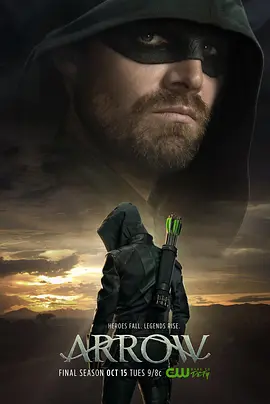

8.9
绿箭侠 第八季
Arrow Season 8
2019
美国
评分 8.9
导演:
詹姆斯·班福德
演员:
斯蒂芬·阿梅尔 / 大卫·莱姆希 / 凯蒂·卡西迪 / 朱丽安娜·哈凯夫 / 瑞克·冈萨雷斯
类型:
剧情,动作,犯罪
剧情简介
面对“监视者”揭示的未来命运，Oliver Queen 开始意识到自己即将迎来一段无可逃避的旅程。他在熟悉的街道上巡视，却明显感到城市的节奏正在发生变化，仿佛某种宏大的危机正在悄然逼近。他与家人的短暂相聚也带着难以言说的沉重，每一次交谈都像在倒数，提醒他时间正在一点点减少。为了阻止即将降临的灾难，Oliver 被迫奔赴一个又一个陌生的世界。他在异样的城市风景间穿梭，与旧日伙伴再次并肩作战，也面对那些早已消失或死亡的身影重新出现。每一次任务都像是在拼凑某个巨大图案的碎片，而其中的代价则是他必须面对亲情、友情与责任之间最艰难的选择。与此同时，星城的团队在没有 Oliver 的情况下继续守护城市。Diggle 的稳重撑起核心，Laurel 与新成员之间也慢慢建立起新的信任。他们在夜色中追踪线索，将零散的威胁压下，但也清楚真正的风暴正越逼越近。团队内部隐隐的担忧随时间递增，仿佛每一次行动结束后都有人在问：Oliver 是否还能回来？随着多元宇宙的裂隙不断扩大，Oliver 的行动愈发紧迫。他在危机中心看到的每一幕，都让他意识到这一季的战斗远超以往任何一次——这是关于无数世界存亡的抉择，也是关于他自身价值与命运的终点考验。最终，他必须面对一个无法回避的问题：作为绿箭，他还能以怎样的方式守护所有他在乎的人？